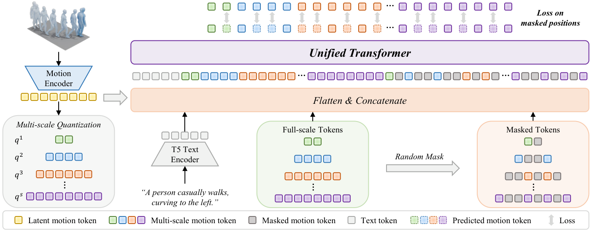
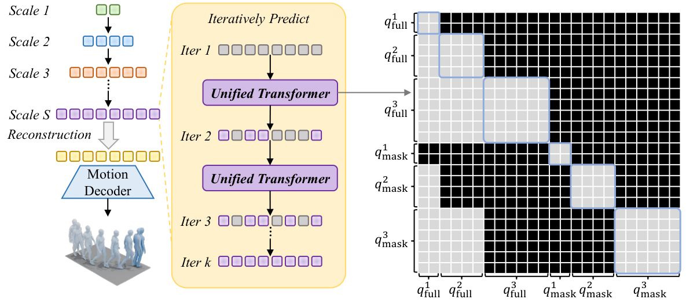

Unifying Next-Scale and Masked Autoregression
for Text-to-Motion Generation
1 College of Artificial Intelligence, China University of Petroleum (Beijing), China
2 School of Computer Science and Technology, Xidian University, China
3 School of Artificial Intelligence and Computer Science, Jiangnan University, China
Abstract
Recent text-to-motion generation methods have explored next-scale autoregression for modeling multi-scale motion dependencies and masked autoregression for refining fine-grained motion details, but these two paradigms are usually treated separately. In this work, we present a unified generative perspective and formulate both paradigms as masked autoregressive generation at the current scale conditioned on completed coarser-scale tokens. Based on this formulation, we propose MoMaScale, which jointly models cross-scale hierarchical dependencies and intra-scale iterative refinement through full-scale tokens from completed coarser scales and masked tokens at the current scale. A dual-role scale-wise attention mask is further introduced to regulate information flow across token roles and scales, enabling direct token-level cross-scale modeling without additional scale alignment. Experiments on standard text-to-motion benchmarks demonstrate the effectiveness of MoMaScale, which achieves the best Top-1 R-Precision (0.551) and FID (0.044) among compared methods on HumanML3D.
Gallery
Dataset: HumanML3D
Method
Unified Generation Formulation
Suppose a motion sequence is represented by tokens at S scales, from the coarsest to the finest. At each scale s, tokens are partitioned into Ks groups to be recovered iteratively. Conditioned on the text description c, MoMaScale unifies coarse-to-fine generation across scales and iterative masked recovery within each scale:
Here, q<s denotes the completed coarser-scale prefix, and Xs,<k denotes the token groups already recovered within the current scale. The model therefore captures both cross-scale hierarchical dependencies and intra-scale iterative refinement in the same conditional decomposition.
When Ks = 1 for all scales, each scale is generated in a single step and the formulation reduces to next-scale autoregression. When S = 1, it reduces to masked autoregression, with iterative token recovery within a single scale.
MoMaScale implements this formulation using full-scale tokens and masked tokens in a unified Transformer. A dual-role scale-wise attention mask lets masked tokens attend only to completed coarser-scale tokens and the current scale’s masked context, while full-scale tokens attend only to full-scale tokens at the same or coarser scales.


Quantitative Results
Text–motion alignment and generation quality on two benchmarks.
Results from the manuscript, averaged over 20 runs; ± denotes a 95% confidence interval. ↑ Higher is better. ↓ Lower is better. † Reproduced results. Selected baselines are shown.
Comparison with Other Methods
Dataset: HumanML3D
BibTeX
If you find MoMaScale useful in your research,
please consider citing our work.
@misc{momascale,
title = {Unifying Next-Scale and Masked Autoregression
for Text-to-Motion Generation},
author = {Zhu, Liping and Ge, Yichen and Li, Chengyang
and Gao, Jian and Li, Hao and Liu, Xu
and Liang, Boqiang and Lin, Xiaojie
and Zhou, Heng}
}